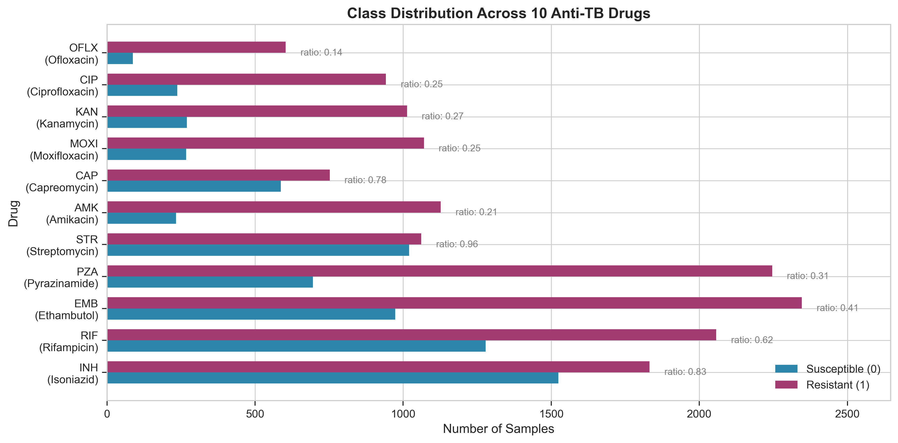
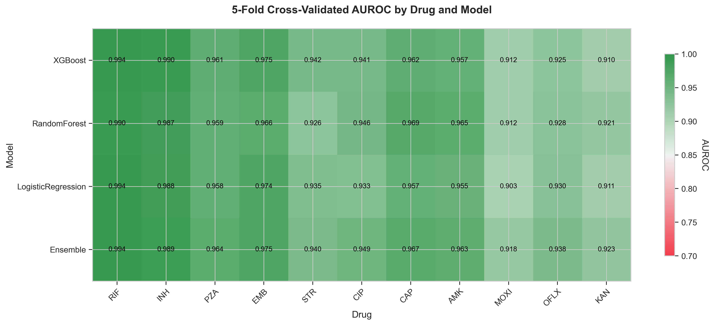
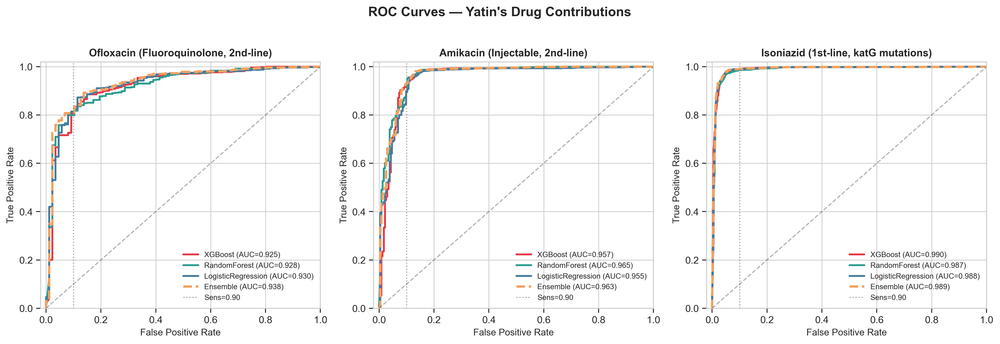
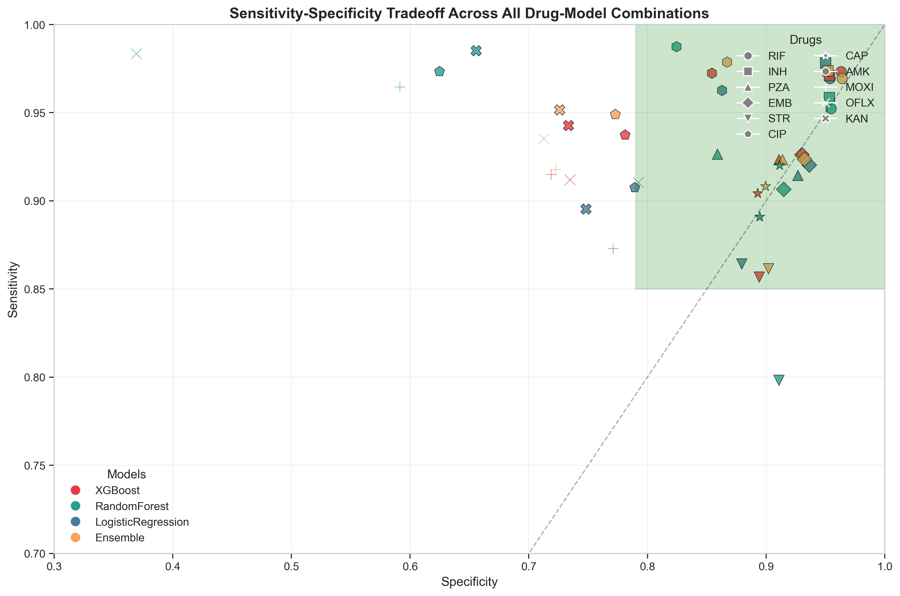
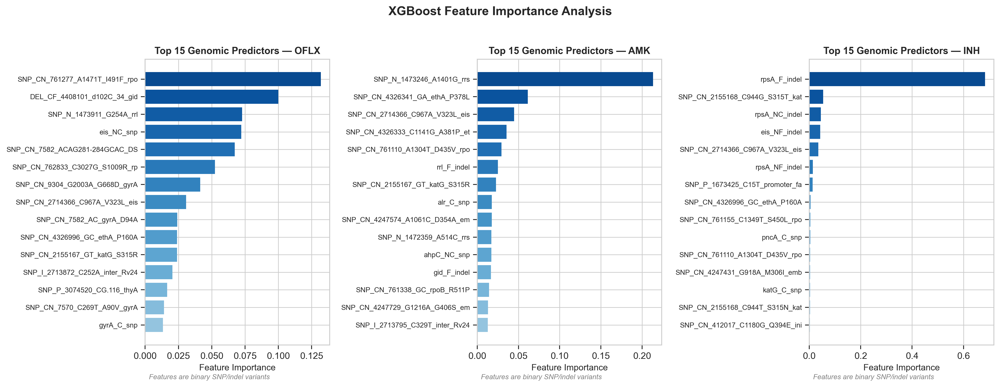
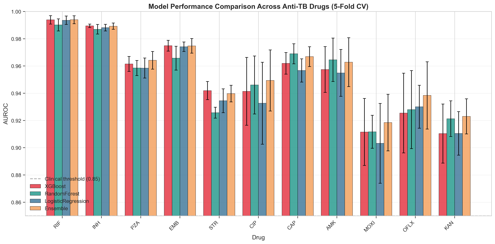
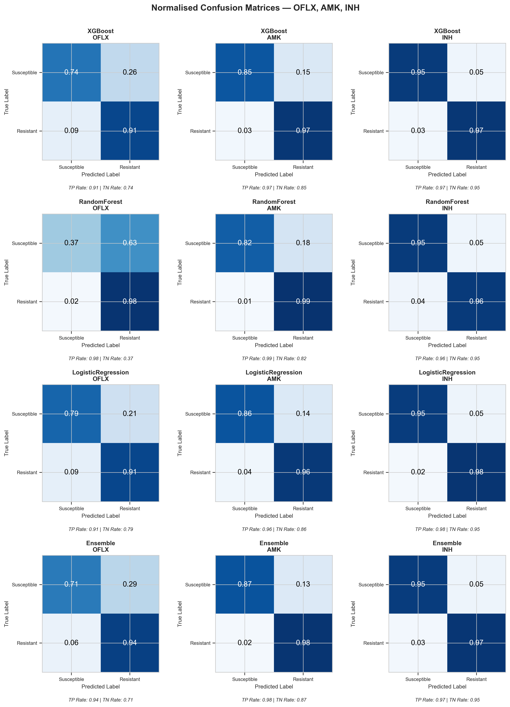
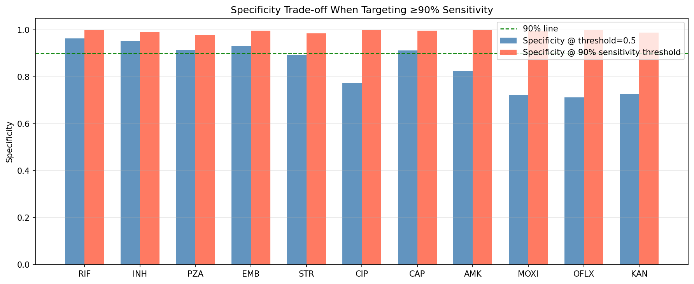
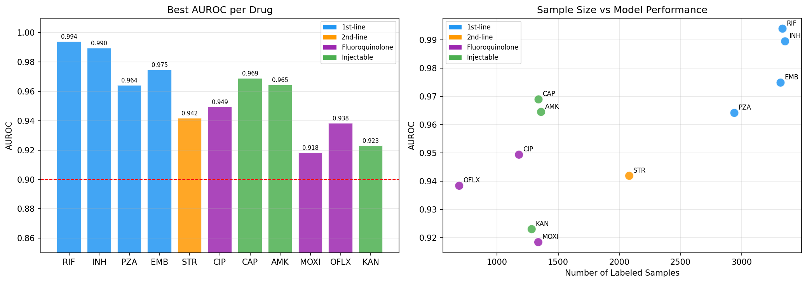

Ensemble ML predicting antibiotic resistance across 3,393 M. tuberculosis isolates and 11 drugs from whole-genome sequencing data. Trained and evaluated at IIT Kanpur.
AUROC >0.99 11 drugs XGBoost · RandomForest · SVM · LogRegFigures
Fig 1. Class imbalance. Distribution of resistant vs. susceptible labels across all 11 drugs. Notice the severe imbalance for some drugs — this drives the SMOTE resampling strategy.

Fig 2. AUROC heatmap. Per-drug, per-model AUROC across the 4 classifiers × 11 drugs matrix. XGBoost dominates, with near-perfect discrimination for Rifampicin and Isoniazid.

Fig 3. ROC curves. Receiver operating characteristic curves for all models. Look for the tightest curves near the top-left — those are the drugs where genetic signal is strongest.

Fig 4. Sensitivity & specificity. Clinical tradeoff: for MDR-TB screening you want high sensitivity even at some specificity cost. These plots show where each model sits on that frontier.

Fig 5. Feature importance. Top genomic variants driving predictions. Known resistance-conferring mutations (e.g. rpoB for Rifampicin, katG for Isoniazid) appear prominently.

Fig 6. Model comparison. Head-to-head comparison across all four classifiers. XGBoost leads overall, but Random Forest is surprisingly competitive on drugs with sparser resistance mutations.

Fig 7. Confusion matrices. Per-drug confusion matrices normalised by true class. High off-diagonal values in the false-negative cell would flag drugs needing better sensitivity.

Fig 8. Threshold tradeoff. How precision and recall shift as the decision threshold moves. Useful for deciding operational cut-offs in a clinical deployment.

Fig 9. Drug-class analysis. Performance grouped by drug class (first-line vs. second-line). Second-line drugs generally show lower AUROC, reflecting rarer resistance mutations in the training set.

Interactive course
A guided walkthrough of the entire pipeline — from raw WGS CSV to trained models — with inline code explanations.